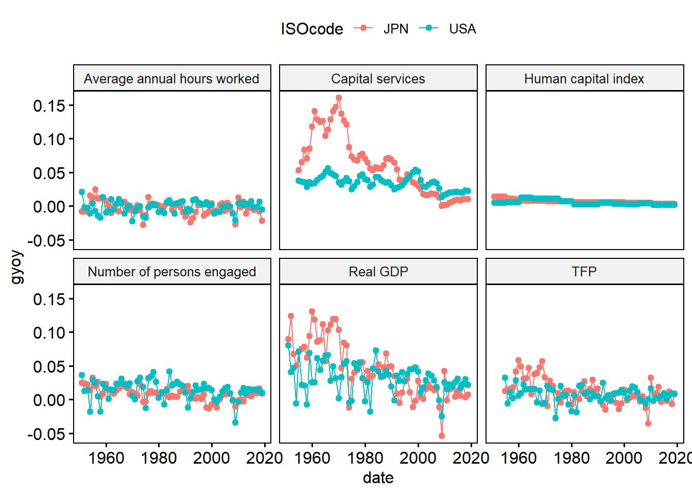
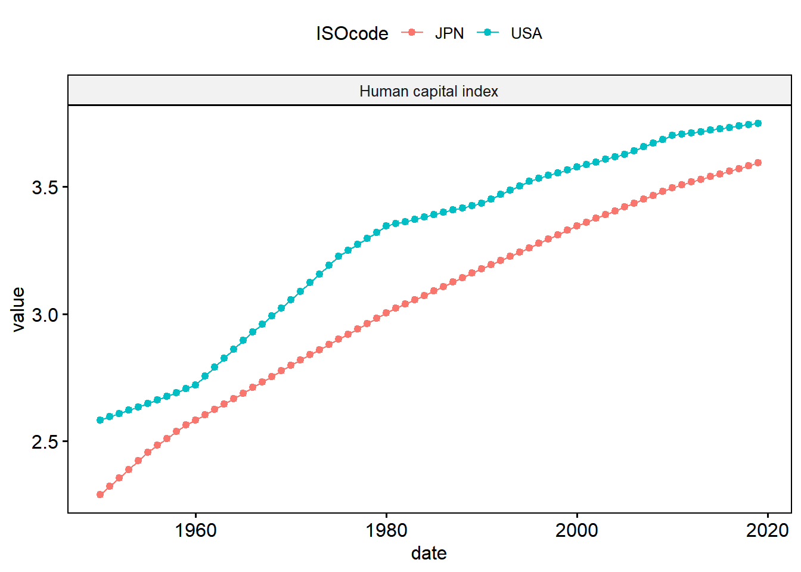

dir.create("../data/raw", showWarnings = FALSE)
download.file(
url = "https://dataverse.nl/api/access/datafile/554105",
destfile = "data/raw/pwt110.xlsx",
mode = "wb"
)Cleaning Raw Data: A Worked Example
Penn World table: Growth Accounting
Download the data
The PWT_GA.csv file used below is the Growth Accounting (GA) query from Penn World Table 11.0. GGDC does not publish a single static CSV link for each query, so the file has to be exported once from their online tool and then read locally (or you can download the full dataset programmatically instead).
Option A — GA query via the online tool (recommended for this script)
- Go to the PWT online data access tool.
- Select the countries/years you want (or leave the defaults for all countries).
- Export/download the result as CSV.
- Save it as
data.raw/PWT_GA.csv(the path the script below expects).
Option B — download the full PWT release programmatically
If you’d rather work from the full dataset and derive the GA variables yourself, you can pull the Excel file directly from Dataverse:
Check the PWT 11.0 page for the current release and file IDs, since these links are updated with each new version.
Load data
library(data.table)
pwt = "../data/raw/PWT_GA.csv"
pwtd = fread(pwt, header = T)
setnames(pwtd, gsub(" ", "", colnames(pwtd)))
str(pwtd)Classes 'data.table' and 'data.frame': 972 obs. of 74 variables:
$ ISOcode : chr "ABW" "ABW" "ABW" "ABW" ...
$ Country : chr "Aruba" "Aruba" "Aruba" "Aruba" ...
$ Variablecode: chr "emp" "labsh" "rgdpna" "rkna" ...
$ Variablename: chr "Number of persons engaged (in millions)" "Share of labour compensation in GDP at current national prices" "Real GDP at constant 2017 national prices (in mil. 2017US$)" "Capital services at constant 2017 national prices (2017=1)" ...
$ 1950 : num NA NA NA NA NA NA NA NA NA NA ...
$ 1951 : num NA NA NA NA NA NA NA NA NA NA ...
$ 1952 : num NA NA NA NA NA NA NA NA NA NA ...
$ 1953 : num NA NA NA NA NA NA NA NA NA NA ...
$ 1954 : num NA NA NA NA NA NA NA NA NA NA ...
$ 1955 : num NA NA NA NA NA NA NA NA NA NA ...
$ 1956 : num NA NA NA NA NA NA NA NA NA NA ...
$ 1957 : num NA NA NA NA NA NA NA NA NA NA ...
$ 1958 : num NA NA NA NA NA NA NA NA NA NA ...
$ 1959 : num NA NA NA NA NA NA NA NA NA NA ...
$ 1960 : num NA NA NA NA NA NA NA NA NA NA ...
$ 1961 : num NA NA NA NA NA NA NA NA NA NA ...
$ 1962 : num NA NA NA NA NA NA NA NA NA NA ...
$ 1963 : num NA NA NA NA NA NA NA NA NA NA ...
$ 1964 : num NA NA NA NA NA NA NA NA NA NA ...
$ 1965 : num NA NA NA NA NA NA NA NA NA NA ...
$ 1966 : num NA NA NA NA NA NA NA NA NA NA ...
$ 1967 : num NA NA NA NA NA NA NA NA NA NA ...
$ 1968 : num NA NA NA NA NA NA NA NA NA NA ...
$ 1969 : num NA NA NA NA NA NA NA NA NA NA ...
$ 1970 : num NA NA 262.31 NA 3.67 ...
$ 1971 : num NA NA 286.15 NA 3.74 ...
$ 1972 : num NA NA 312.15 NA 3.85 ...
$ 1973 : num NA NA 340.53 NA 3.99 ...
$ 1974 : num NA NA 371.47 NA 4.13 ...
$ 1975 : num NA NA 405.23 NA 4.27 ...
$ 1976 : num NA NA 442.06 NA 4.41 ...
$ 1977 : num NA NA 482.24 NA 4.54 ...
$ 1978 : num NA NA 526.07 NA 4.67 ...
$ 1979 : num NA NA 573.88 NA 4.81 ...
$ 1980 : num NA NA 626.04 NA 4.95 ...
$ 1981 : num NA NA 682.9 NA 5.1 ...
$ 1982 : num NA NA 745 NA 5.26 ...
$ 1983 : num NA NA 812.71 NA 5.42 ...
$ 1984 : num NA NA 886.58 NA 5.59 ...
$ 1985 : num NA NA 967.15 NA 5.76 ...
$ 1986 : num NA NA 1055.05 NA 5.94 ...
$ 1987 : num NA NA 1224.69 NA 6.11 ...
$ 1988 : num NA NA 1453.1 NA 6.3 ...
$ 1989 : num NA NA 1629.33 NA 6.48 ...
$ 1990 : num NA NA 1693.88 NA 6.67 ...
$ 1991 : num 2.92e-02 6.48e-01 1.83e+03 2.52e-01 6.86 ...
$ 1992 : num 3.09e-02 6.48e-01 1.94e+03 2.75e-01 7.07 ...
$ 1993 : num 3.29e-02 6.48e-01 2.08e+03 2.99e-01 7.27 ...
$ 1994 : num 3.49e-02 6.48e-01 2.25e+03 3.23e-01 7.47 ...
$ 1995 : num 3.66e-02 6.48e-01 2.30e+03 3.55e-01 7.67 ...
$ 1996 : num 0.038 0.637 2333.354 0.381 7.891 ...
$ 1997 : num 3.91e-02 6.35e-01 2.52e+03 4.11e-01 8.15 ...
$ 1998 : num 4.01e-02 6.38e-01 2.68e+03 4.46e-01 8.43 ...
$ 1999 : num 0.041 0.655 2714.383 0.478 8.731 ...
$ 2000 : num 4.19e-02 6.45e-01 2.84e+03 5.02e-01 9.06 ...
$ 2001 : num 4.28e-02 6.45e-01 2.83e+03 5.27e-01 9.40 ...
$ 2002 : num 4.37e-02 6.45e-01 2.77e+03 5.58e-01 9.70 ...
$ 2003 : num 4.46e-02 6.45e-01 2.78e+03 5.92e-01 9.99 ...
$ 2004 : num 4.54e-02 6.45e-01 2.99e+03 6.30e-01 1.03e+01 ...
$ 2005 : num 4.59e-02 6.45e-01 3.02e+03 6.75e-01 1.06e+01 ...
$ 2006 : num 4.63e-02 6.45e-01 3.03e+03 7.23e-01 1.10e+01 ...
$ 2007 : num 4.64e-02 6.45e-01 3.12e+03 7.65e-01 1.14e+01 ...
$ 2008 : num 4.64e-02 6.45e-01 3.04e+03 8.10e-01 1.18e+01 ...
$ 2009 : num 4.64e-02 6.45e-01 2.78e+03 8.47e-01 1.23e+01 ...
$ 2010 : num 4.65e-02 6.45e-01 2.69e+03 8.74e-01 1.20e+01 ...
$ 2011 : num 4.57e-02 6.45e-01 2.70e+03 9.00e-01 1.27e+01 ...
$ 2012 : num 4.59e-02 6.45e-01 2.66e+03 9.21e-01 1.31e+01 ...
$ 2013 : num 4.62e-02 6.45e-01 2.78e+03 9.37e-01 1.36e+01 ...
$ 2014 : num 4.65e-02 6.45e-01 2.78e+03 9.52e-01 1.40e+01 ...
$ 2015 : num 4.67e-02 6.45e-01 2.94e+03 9.65e-01 1.45e+01 ...
$ 2016 : num 0.047 0.645 3003.414 0.982 15.028 ...
$ 2017 : num 4.72e-02 6.45e-01 3.06e+03 1.00 1.55e+01 ...
$ 2018 : num 4.74e-02 6.45e-01 3.09e+03 1.02 1.61e+01 ...
$ 2019 : num 4.76e-02 6.45e-01 3.07e+03 1.03 1.66e+01 ...
- attr(*, ".internal.selfref")=<externalptr> pwtd[, .N, by = .(Variablecode, Variablename)] Variablecode
<char>
1: emp
2: labsh
3: rgdpna
4: rkna
5: hc
6: rtfpna
7: avh
Variablename
<char>
1: Number of persons engaged (in millions)
2: Share of labour compensation in GDP at current national prices
3: Real GDP at constant 2017 national prices (in mil. 2017US$)
4: Capital services at constant 2017 national prices (2017=1)
5: Human capital index, based on years of schooling and returns to education; see Human capital in PWT9.
6: TFP at constant national prices (2017=1)
7: Average annual hours worked by persons engaged
N
<int>
1: 182
2: 138
3: 183
4: 137
5: 145
6: 118
7: 69Reshape to long format
pwtdl = melt(pwtd,
id.vars = c("Variablecode", "Variablename",
"ISOcode", "Country"),
variable.name = "date",
variable.factor = FALSE)
setorder(pwtdl, ISOcode, Variablename, date)Compute year-over-year growth
pwtdl[, Lvalue := shift(value, type = "lag"),
by = .(ISOcode, Variablename)]
pwtdl[, gyoy := value / Lvalue - 1]
pwtdl[, date := as.numeric(date)]
pwtdl[, Variablename2 := trimws(gsub("(\\(|\\,|by\\b|at\\b).*$", "",
Variablename))]Plot growth rates (Japan vs US)
ggpubr::ggline(pwtdl[ISOcode %in% c("JPN", "USA")
& !grepl("Share", Variablename)
&!is.na(gyoy)],
x = "date", y = "gyoy", color = "ISOcode",
facet.by = "Variablename2",
numeric.x.axis = T)
Plot index variables
ggpubr::ggline(pwtdl[ISOcode %in% c("JPN", "USA")
& grepl("index", Variablename)],
x = "date", y = "value", color = "ISOcode",
facet.by = "Variablename2",
numeric.x.axis = T)
Save processed data
fwrite(pwtdl[, .(Variablecode,
Variablename2,
ISOcode, date,
value, gyoy)],
"../data/temp/pwt.csv")